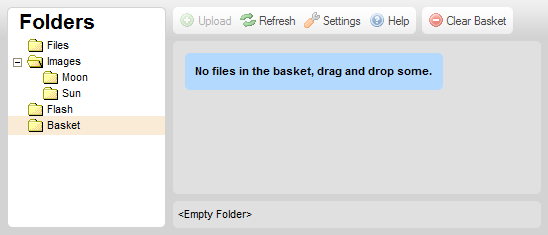
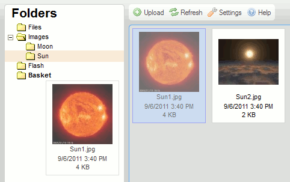
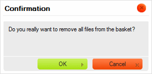

Koszyk to folder dost臋pny w panelu folder贸w, otwieraj膮cy panel koszyka.
Koszyk jest wirtualnym, tymczasowym pojemnikiem wykorzystywanym do wykonywania operacji na grupach plik贸w w CKFinderze. Jest pojemnikiem wirtualnym, gdy偶 pliki umieszczane w koszyku nie s膮 fizycznie przenoszone z ich folder贸w macierzystych.
Poni偶szy rysunek pokazuje panel koszyka CKFindera, kt贸ry zostaje rozwini臋ty po klikni臋ciu folderu Koszyk (Basket) w panelu folder贸w.

Uwaga: Koszyk jest folderem prywatnym, co oznacza, i偶 nie jest wsp贸艂dzielony z innymi u偶ytkownikami systemu plik贸w i powi膮zany jest z Twoj膮 sesj膮 przegl膮darki internetowej.
Na pocz膮tku ka偶dej sesji CKFindera koszyk jest pusty i wy橹wietlony zostaje komunikat zach臋caj膮cy do przeci膮gni臋cia do niego plik贸w. W celu dodania plik贸w do koszyka przejd藕 do folderu zawieraj膮cego plik, kt贸ry zamierzasz u偶y膰, przeci膮gnij go nad folder koszyka w panelu folder贸w, i upu橹膰.

Plik powinien si臋 teraz pojawi膰 w folderze koszyka.
Kiedy plik zostaje umieszczony w koszyku, jego menu kontekstowe zmieni si臋 w taki spos贸b, by uwzgl臋dnia膰 jedynie operacje dost臋pne w tym specjalnym folderze.
Istniej膮 dwie metody usuwania pliku z koszyka. Po pierwsze, mo偶na usun膮膰 pojedynczy plik, wybieraj膮c opcj臋 Usu艅 z koszyka (Remove from Basket) z menu kontekstowego pliku. Po wybraniu tej opcji wy橹wietlone zostanie okno dialogowe z potwierdzeniem.

Mo偶liwe jest r贸wnie偶 usuni臋cie wszystkich plik贸w z koszyka naraz poprzez klikni臋cie przycisku Wyczy橹膰 koszyk (Clear Basket) na pasku narz臋dzi. Po klikni臋ciu przycisku zostaniesz poproszony o potwierdzenie, czy chcesz wyczy橹ci膰 ca艂膮 zawarto橹膰 koszyka.

Uwaga: Usuni臋cie pliku z koszyka nie usuwa go z systemu plik贸w. Plik ten w dalszym ci膮gu b臋dzie dost臋pny w swoim folderze macierzystym.
Jak wspomniano wy偶ej, koszyk jest folderem wirtualnym, kt贸ry pokazuje pliki fizycznie znajduj膮ce si臋 w innych folderach systemu plik贸w. Je橹li chcesz odnale藕膰 folder 藕r贸d艂owy pliku, wybierz opcj臋 Otw贸rz folder z plikiem (Open Parent Folder) z menu kontekstowego pliku. CKFinder otworzy wtedy folder, w kt贸rym oryginalnie znajduje si臋 plik.
Po umieszczeniu plik贸w w koszyku b臋dziesz m贸g艂 skopiowa膰 je do innego (fizycznego) folderu. W celu skopiowania plik贸w wska偶 folder docelowy w panelu folder贸w i wybierz opcj臋 Skopiuj pliki z koszyka (Copy Files from Basket) z menu kontekstowego folderu.
Wy橹wietlone zostanie okno potwierdzenia wymieniaj膮ce pliki, kt贸re zosta艂y skopiowane do folderu docelowego.
Pliki te zostan膮 zduplikowane, a ich kopie umieszczone b臋d膮 w folderze docelowym. Zawarto橹膰 folderu 藕r贸d艂owego nie zmieni si臋.
Koszyk przydaje si臋 r贸wnie偶 wtedy, gdy chcesz przenie橹膰 jakie橹 pliki pomi臋dzy folderami. Po umieszczeniu plik贸w w koszyku nale偶y wskaza膰 folder docelowy w panelu folder贸w i wybra膰 opcj臋 Przenie橹 pliki z koszyka (Move Files from Basket) z menu kontekstowego folderu.
Wy橹wietlone zostanie okno potwierdzenia wymieniaj膮ce pliki, kt贸re zosta艂y przeniesione do folderu docelowego.

Pliki te zostan膮 usuni臋te z folderu 藕r贸d艂owego i dodane do folderu docelowego.